Hi, I'm Bipul Kumar
BCA Student | Aspiring Software Developer
I am currently pursuing a Bachelor of Computer Applications (BCA) at IIMT University Meerut. With a strong interest in technology and programming, I enjoy creating projects that combine logic, creativity, and innovation. My main areas of interest include Web Development, Software Development, and Problem Solving.I have hands-on experience with multiple programming languages such as C, C++, Java, Python, PHP, MySQL, and JavaScript. I also love exploring new tools and technologies that help me grow as a developer. My goal is to become a skilled software engineer and contribute to impactful projects that solve real-world problems.Apart from academics, I regularly practice coding challenges, contribute to small projects, and continuously work on improving my technical and soft skills. I believe in learning by doing and always strive to push my limits.
 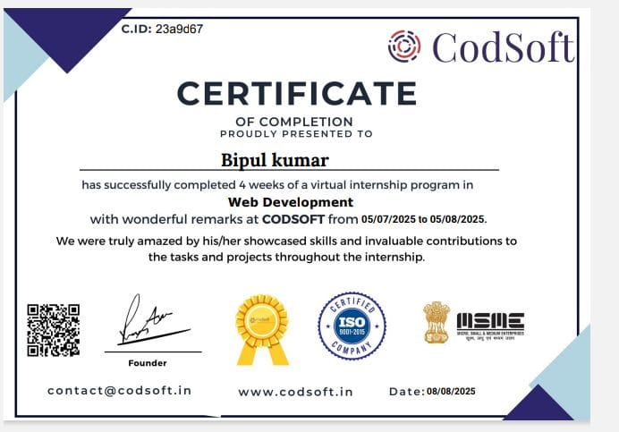
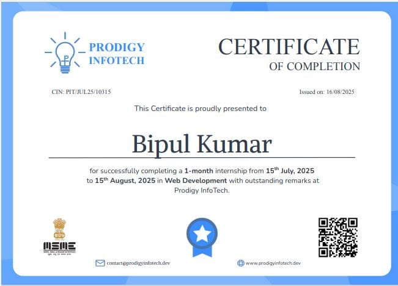
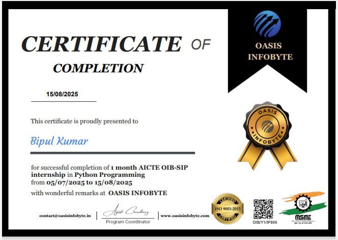
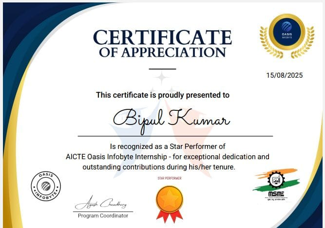
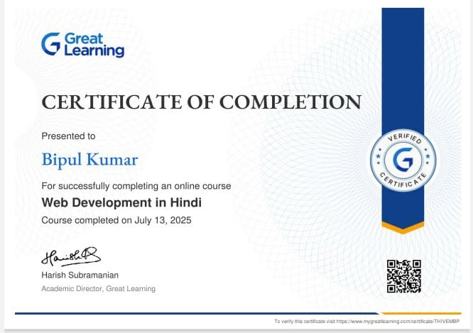
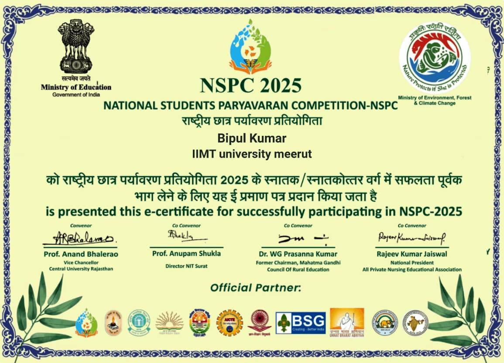
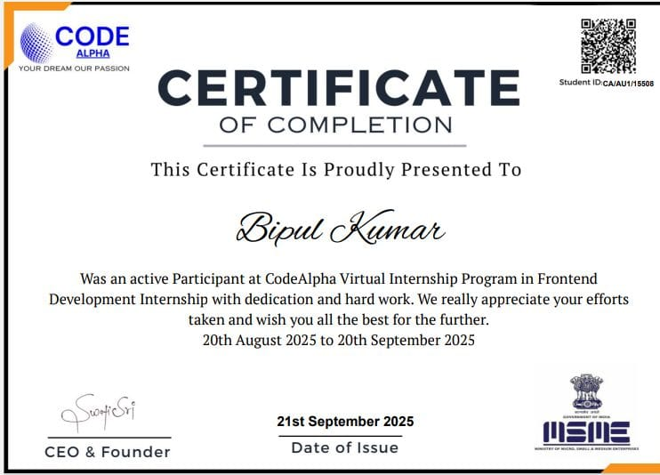
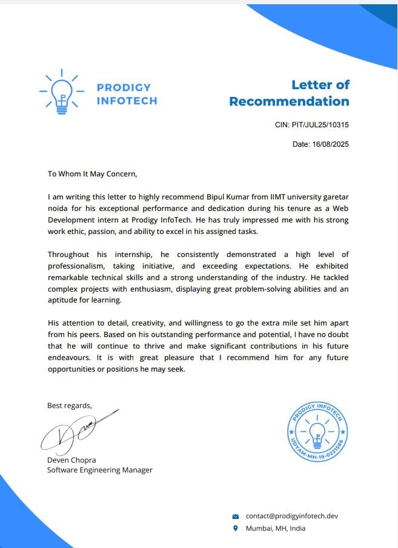
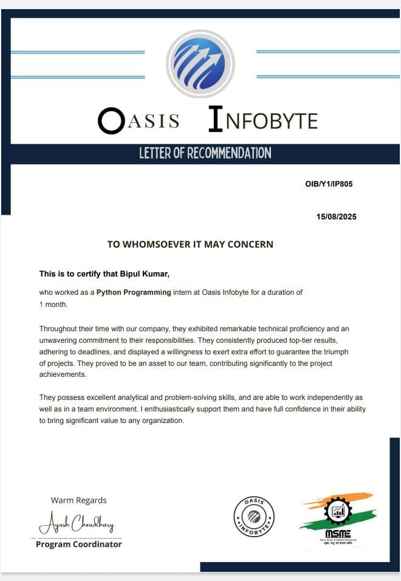
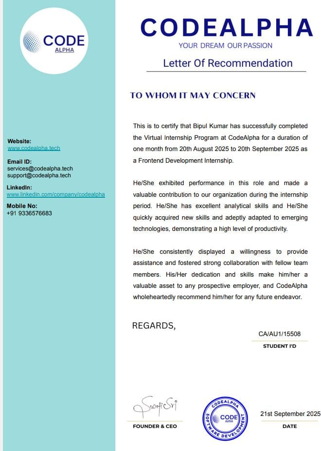
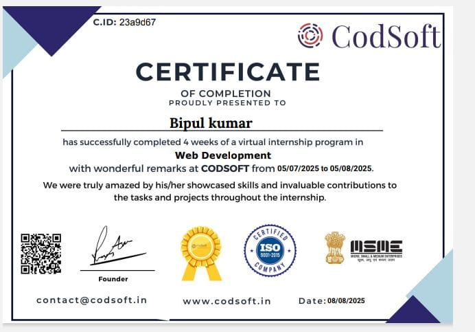
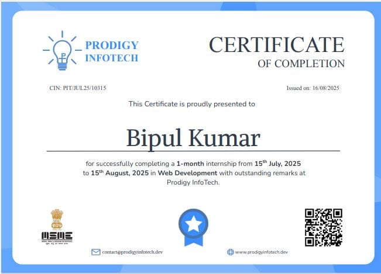
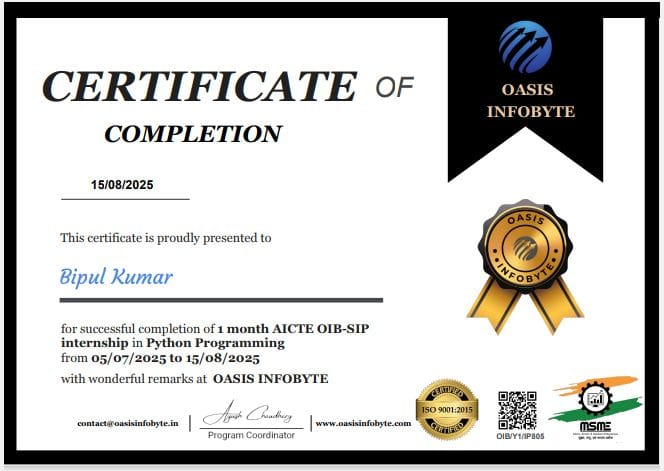
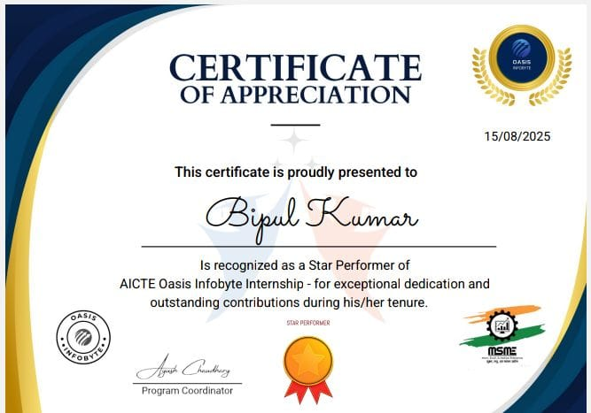
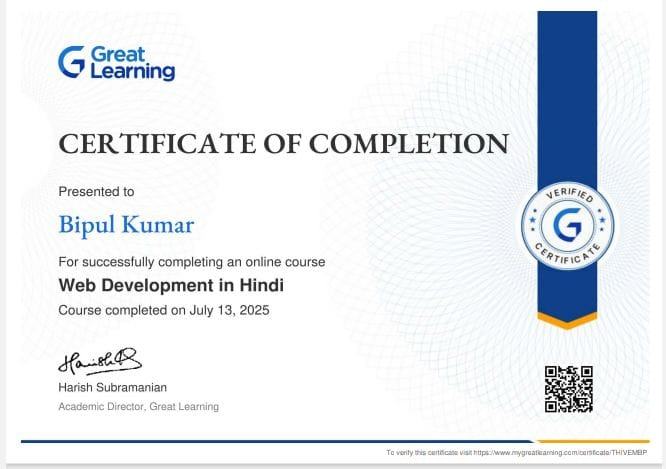
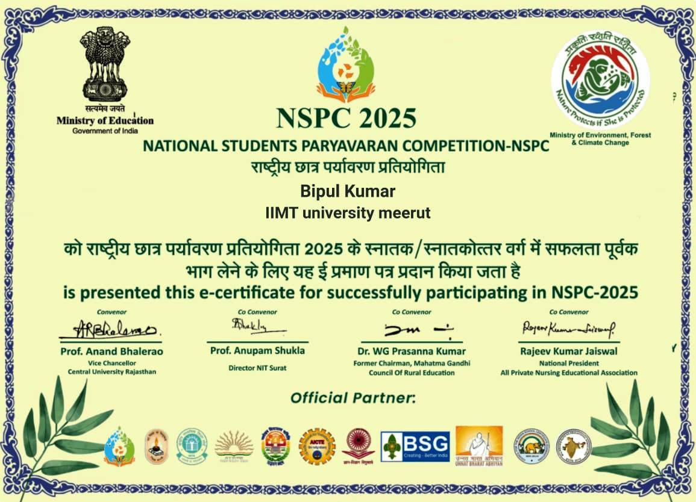
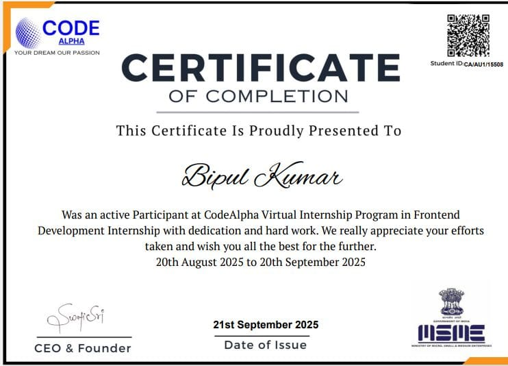
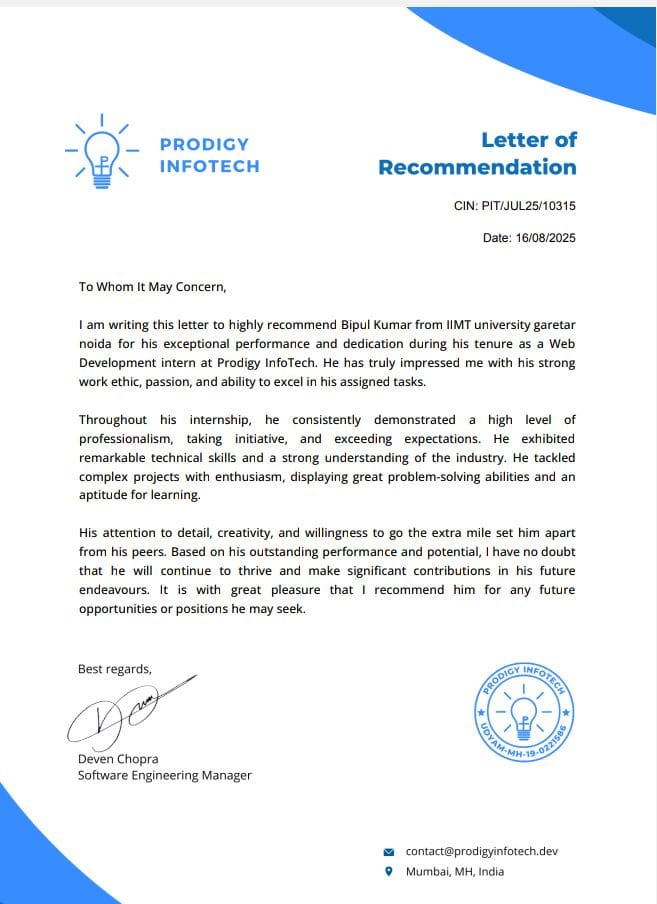
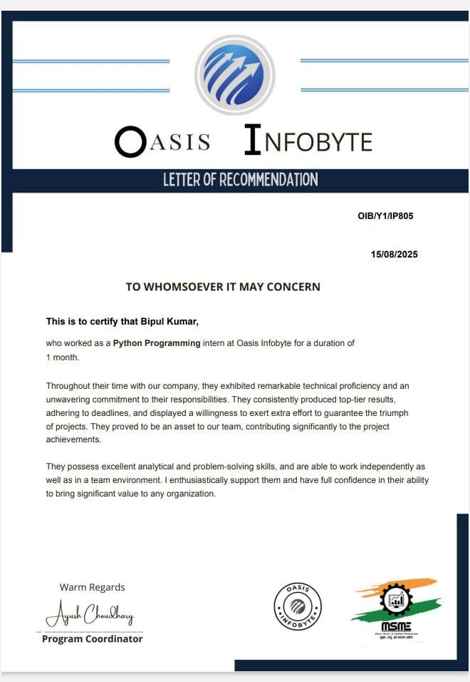
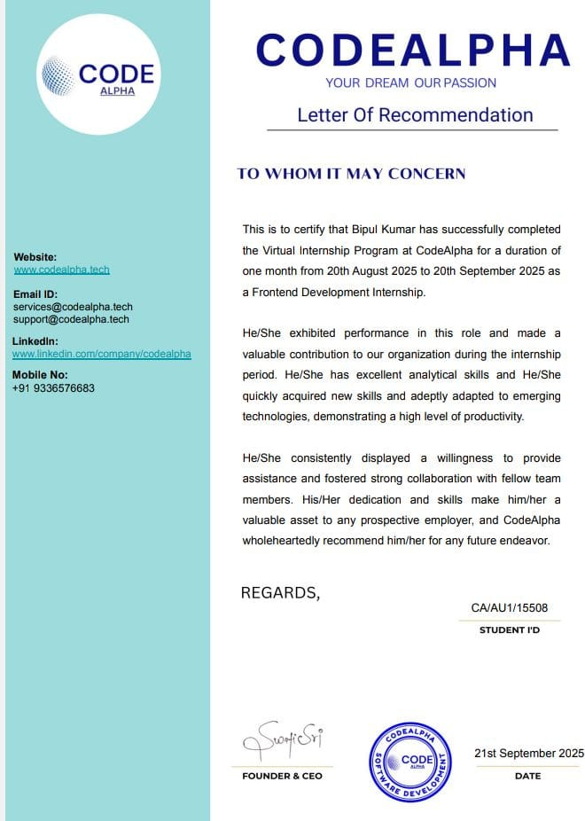